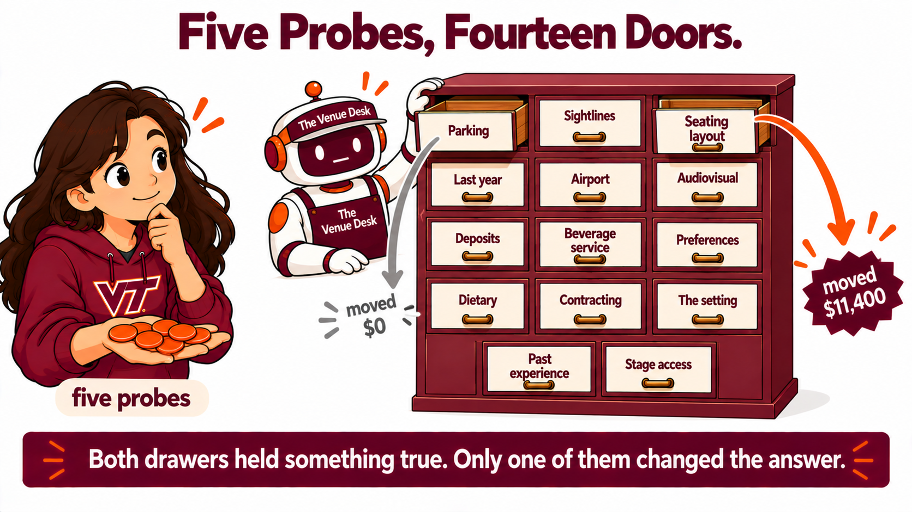

By the end of this lecture, students will be able to:
- Tell an anchor from a background factor, where an anchor changes which option gets chosen and a background factor is true and changes nothing.
- Say why the name of a topic does not tell anyone whether that topic is an anchor.
- Spend a fixed number of probes on a hidden scenario and say what each probe was spent to find out.
- Read a recommendation with a factor in force beside the same recommendation with that factor set aside, and say what the difference is worth in dollars.
- Name one factor that sounded consequential and changed nothing, and say why that factor changed nothing.
- Say what they would ask first about a decision whose information they cannot see.
On Tuesday you took a case you could read, changed one fact in it, and watched the answer move. You could see every fact because you wrote them.
Today the facts belong to somebody else and you cannot see them. A committee has to book a venue, six venues have sent quotes, and an agent holds fourteen things about this event that you have not been told. Five probes are yours to spend.

On Tuesday you learned the word for a piece of information that changes a decision. An anchor is a fact the answer stands on, and taking it away moves the answer somewhere else.
The second kind of fact has been there the whole time without a name. A background factor is true, sounds like it belongs in the decision, and changes nothing about which option gets chosen.
Tuesday you could see every fact, because you wrote them. Today you cannot see any of them.
The chapter's annual alumni dinner is thirty five days away. Four hundred people have confirmed. The venue that has been booked since spring cancelled last Friday. Six venues have space on that date and have sent quotes.
The decision is to pick one of the six venues and sign with it.
The objective is to spend the least money the committee can spend, among the venues that can actually hold this event as planned. A venue can hold the event unless something makes it impossible or breaks a rule the committee has to follow. What the committee likes, prefers or remembers does not disqualify a venue. The money the committee spends is the quoted total plus anything the committee is required to pay on top of it, and it does not include money that guests pay themselves.
Read that last sentence twice. Somebody in this room is about to need it.
Before you open the desk:
- An agent is holding fourteen things about this event. Name two you would expect to be in there, and say which of the six venues each one would be about.
- The objective says money that guests pay themselves does not count. Name something a venue could charge that the committee would never see on its invoice.
Your instructor has the same six quotes you do and the same objective. The desk holds fourteen numbered topics, and the only thing the list gives away is what each topic is about.
Two of the fourteen are about to be opened in front of you. Before each one, decide for yourself whether it will move the answer.
Your instructor runs this prompt on screen. You do not paste it yourself.
Fourteen names and nothing else. Look at them and pick the three you would spend a probe on.
Say your three out loud when your instructor asks. Nobody is going to tell you whether you were right.
Your instructor runs this prompt on screen. You do not paste it yourself.
The desk gives back the topic's actual contents, then what that one factor does on its own, then two lines of surviving venues, then the two lines that matter.
The recommendation with everything the committee knows is Sterling Barn at Willow Run at twenty eight thousand eight hundred dollars.
The recommendation without this one factor is Lakeview Hall at seventeen thousand four hundred dollars.
Work out the difference before your instructor says it.
Your instructor runs this prompt on screen. You do not paste it yourself.
Before the reply is read, decide. Parking costs money, and the objective is about money, so this one should move the answer.
Then read the two lines.
Both of those facts are true. Both are about the six venues. One of them is worth eleven thousand four hundred dollars and the other is worth nothing.
Guest parking is money, and it is not the committee's money. The objective said so in a sentence that was easy to read past.
Nothing in the words "seating layout" or "guest parking" told anybody which of the two would move the answer. The names describe what a topic is about. Whether a topic is an anchor depends on what is inside it and on what the other thirteen say.
- Before the second probe was opened, most of this room expected parking to matter. What made parking feel like an anchor?
- Your instructor spent two probes. You get five, out of fourteen. What would you spend the first one on now, and has that changed since the list went up?
Copy this block and paste it into Hokie AI to begin your session.
Seventeen minutes, one conversation, at most twelve exchanges. Everything you do from here stays in this one thread, including your reflection at the end, because the export of this thread is what you submit.
The desk answers what is asked and gives away nothing about which topics matter. Asking it which ones matter costs you a message and returns nothing.
Three anchors out of five probes is a good result.
Move one. Before you ask for anything, tell the desk what you think it is holding. Guess two or three kinds of information that could change which venue is cheapest, and send them. The desk will count your guesses and tell you nothing about them. Write the guesses first, because after the list appears you will never know what you would have said.
Move two. Ask the desk for the list of topics. Read all fourteen names before choosing anything.
Move three. Spend five probes, one at a time, and read each reply before you pick the next. Each reply gives you the contents of that topic, what that one factor does on its own, and two recommendations. The two recommendations are the ones to compare. If they name the same venue at the same price, that topic changed nothing. If they name different venues, the difference between the two prices is what that one piece of information was worth.
Move four. Write one short line in the thread listing which of your five moved the answer and by how much, and which moved nothing. Write it yourself. The desk will not write it for you.
Five probes is the whole budget and there is no sixth. Choosing which five is the exercise.
- Click Copy opening marker and paste it into Hokie AI to begin this block.
- Interact with Hokie AI: ask questions, explore, respond. All of this exchange belongs to this block.
- When finished, use the Copy closing marker button below to close the block in your thread.
When you have finished your exchange, copy this closing marker and paste it into Hokie AI to close the block.
Everybody in this room questioned the same desk about the same decision. Almost nobody opened the same five topics, and the results are not the same.
Hands up for how many of your five probes moved the recommendation. None, one, two, three, four, five. Your instructor reads the room out loud.
Then say your five numbers out loud when asked. Listen to the numbers other people say.
You each saw five topics out of fourteen. The only place the whole picture exists is in this room, spoken aloud, and it will not exist anywhere after you leave.
Take these into the reflection:
- Several topic numbers were opened by most of this room and several were opened by nobody. What did the popular numbers have in common, and what did the untouched ones have in common?
- A topic that changed nothing is still true. Name a decision outside this room where somebody spent real effort on something true that changed nothing.
Turn to the person next to you. Give your partner three things. Say which probe you are gladdest you spent AND say which probe you would take back AND name one topic your partner opened that you did not, and ask what was in it.
Three minutes. You each had five probes out of the same fourteen, so whatever separates your two results came from which five you chose.
Now write your reflection in this same conversation, in your own words and without help from the AI. Put it in a block that begins with R5.2.1 on its own line.
Your reflection needs all four of these. Name which of your five probes moved the answer most and say what that difference was in dollars AND name one topic that sounded consequential and moved nothing, and say why that topic moved nothing AND say what made you choose your first probe, and whether that reason held up once you read the reply AND say what you would ask first about a decision whose information you cannot see, and why that question first. Respond to all four.
The fourth is the one that separates a good reflection from an adequate one. Naming a question is not enough by itself. Say why that question goes first, and take the reason from what happened in your own five probes.
Write 80 to 160 words.
Write your response in the box below (target: 80 to 160 words), then click Copy and paste into Hokie AI.
Export this thread as a .zip file, then upload it to the Canvas assignment. Your work is not submitted until Canvas shows your file.
Open the Canvas assignment